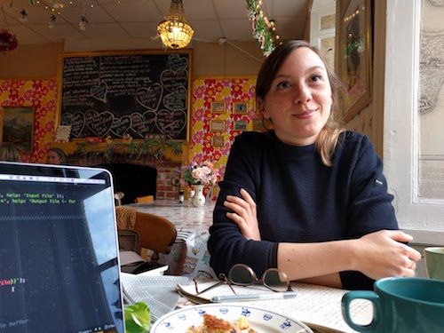
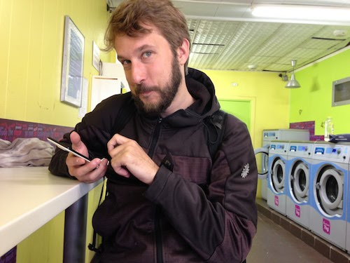

<div class="wrapper">
  <div class="inner">

    <h5>Noémie</h5>

  <p>Noémie a commencé par aiguiser ses sens avec des études de littérature anglophone — particulièrement sur l’angle postcolonial.<br>
    Elle passe son temps à partir à l’écoute de signaux faibles. Elle puise des ressources dans le design de service (public), les formes que prennent l’agilité, les politiques d’ouverture (de données), les droits des femmes. <br>
    Après avoir travaillé la présence web d’un lieu culturel (la Gaîté lyrique) puis s’être formée au métier de Product Owner à Londres (dans l’agence Made by Many),
    elle pratique la recherche utilisateur et s’intéresse aux systèmes et aux services. <br>
    Elle a toujours un pied dans le monde anglophone, et passe pas mal de temps à comprendre et interroger la manière dont les organisations s’adressent aux gens et partagent leurs réflexions. Que ce soient les mots choisis pour décrire le projet, la manière d’être en lien avec leurs communautés (par des emails ou via les réseaux sociaux), ou l’éditorial : des articles, des vidéos/du son, de la documentation…
    Elle aime particulièrement créer des opportunités pour extraire les connaissances (le ‘brain juice’) de gens qui développent des initiatives nouvelles et n’ont pas forcément le temps de réfléchir à la transmission.
    <ul>On la retrouvera :
    <li> en train d’écouter des podcasts
    <li> scanner twitter pour s’imprégner de (nouvelles) voix féministes
    </ul>

    Addictions : la mozzarella (la vraie) 🐄 et les correspondances 📮
  </p>

<h5>Thomas</h5>



  <p>Thomas est un autodidacte, au sens le plus positif du terme. <br>
  D’abord en développement - depuis son premier site sur les jeux vidéos lancé à 12 ans jusqu’au déménagement en Angleterre à 30 ans pour rejoindre l’équipe R&D de la BBC.<br>
  Il s’interroge sur les manières de travailler, pratique et explore la collaboration et la coopération.
  Il s’imprègne de communautés diverses, et dans son travail on retrouve des traces d’agilité, de valeurs et de communication ouvertes.
  <br><br>En 2016 il lance sa coopérative dtc innovation avec 2 co-fondat•eur•rice•s — un nouveau format de travail qui permet à la fois d’apporter de l’indépendance et de la liberté, de la variété dans les projets, mais aussi de nouvelles manières d’être investis ensemble sur un organe de travail, bénéficier de conseils, prendre de la perspective.
  <br>En plus : il s’est formé à la permaculture au Bec Hellouin en 2015 (le chanceux) après en avoir découvert les principles. Il a ensuite été bénévole à la Lea Organic Farm de Londres, en ayant adapté son rythme de travail à 4 jours par semaine.
  <ul>On le retrouvera :
  <li> passer du temps à travailler le sens, les besoins et les usages avant la solution.
  <li> partant à la recherche de personnes qui travaillent différemment.
  </ul>

  Addictions : le fromage 🧀 et le camping sauvage 🏕
</p>

<h5>Pourquoi l’itinérance ?</h5>

<p>Le choix de mot est simple : on voulait s’éloigner le plus loin possible de l’imagerie de l’expression “digital nomade” farcie de clichés.
On travaille à distance, et à notre compte, c’est sûr. Par contre, la plupart du temps, on n’est ni sur une plage, ni à Bali.</p>

<h5>L’idée</h5>

<p>Elle a fluctué.
<ul>D’abord un “tour de France des tiers-lieux”, puis un “tour du sud de la France des tiers-lieux et des copains”, on part surtout avec pas mal de flexibilité :
<li> <b>à la rencontre d’acteurs des communs </b>(technologiques, agricoles, d’information…) à travers des évènements ou des mises en relation.
<li> <b>au contact de gens et de démarches singulières</b> (ça peut include un boulanger qui favorise la réimplantation de blés anciens comme un collectif de développeurs qui a décidé de moduler des formats de travail — c’est vaste et c’est voulu)
<li> <b>à la recherche d’un environnement de vie </b> : une ville, un village, une région, les gens qui font vivre ces endroits. Pouvoir rejoindre un groupe de personnes impliquées dans un effort commun (quel qu’il soit) et pouvoir y participer est une composante essentielle de ce qu’on cherche.
</ul> </p>

<h5>Jusqu’à quand ?</h5>

<p>Il n’y a pas de moment de fin défini à ce stade, peut être l’automne 2018, peut être plus tard. </p>

<h5>Et vous vous déplacez comment&nbsp?</h5>

<p>En transports en commun et à pied. </p>
  </div>
</div>
